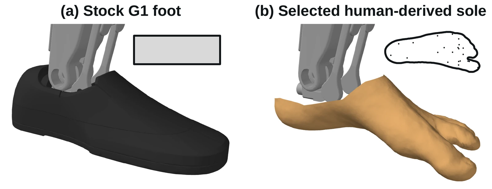
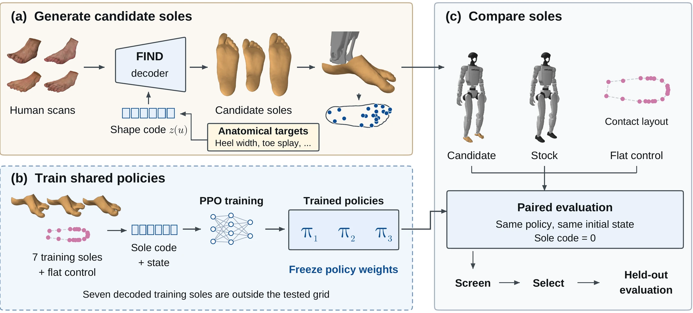
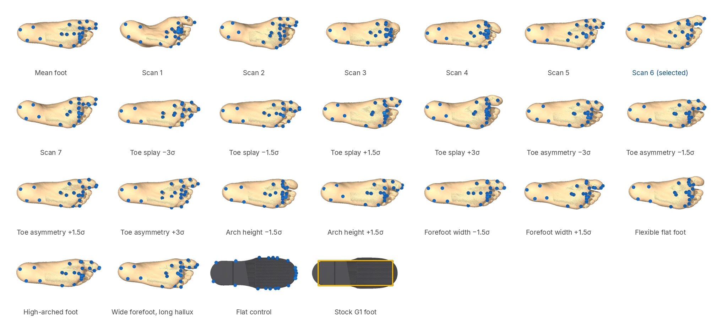

Abstract
Feet2Feat tests human-shaped soles on the Unitree G1 under shared, frozen controllers in simulation. We decode a family of soles from a model of human foot scans, represent each sole with contact spheres, and compare them from identical initial states under policies trained on other feet. All 23 designs turn in place better than the stock foot on level ground, and 22 outperform a flat sole made from the same spheres. A selected design with a broad forefoot and long hallux reduces yaw-rate error by 0.05 to 0.08 rad/s against stock and about 0.05 rad/s against the flat control on four level-ground cells. It wins all 48 paired episodes per cell on sixteen held-out states under three policies. The gain persists when the box's contact settings and inertials are matched to the sphere feet. Three fresh policies reproduce the level-ground turning gain and the walking-while-turning gains on flat ground and pyramids. Under a third policy family trained to track five human-motion clips, the same sole uses 8% less joint work than stock. On rough ground, a span-matched ring reproduces the wide heel's turning gain, identifying a useful geometric property without requiring an anatomical shape. A separate static press quantifies the contact-area change that rigid soles omit. These results make sole geometry a measurable design variable under fixed controllers.

Tracking human motion
We tested three policies trained to imitate five human motion clips on 228 paired windows. The stock foot ended 15 windows early (a fall or a large tracking error), our sole 9. Below are all six windows where only the stock foot failed; there were none where only our sole failed.
Jumps, tracking policy 2. The stock foot loses balance at 2.1 s.
Run, tracking policy 1. The stock foot loses balance at 6.0 s.
Dance, tracking policy 1. The stock foot loses balance at 0.9 s.
Fight, tracking policy 1. The stock foot loses balance at 7.7 s.
Fight, tracking policy 2. The stock foot loses balance at 2.7 s.
Fight, tracking policy 2. The stock foot loses balance at 2.7 s.
Recorded trajectories, replayed at 1× speed. Across all windows our sole also used 8% less joint work than the stock foot.
Turning and walking
Under velocity commands, our sole won all 48 paired held-out episodes of turning in place on each level terrain, reduced yaw-rate error by 0.091 rad/s when walking while turning on flat ground (0.060 rad/s on pyramids), and travelled 12 to 17% further backward per kilojoule of joint work. Each clip shows the held-out start whose paired difference is closest to that policy's average.
Turning in place, 0.5 rad/s. The wedge is the heading lag behind the command.
Walking while turning at 0.5 m/s and 0.3 rad/s, top view. Dashed: the commanded circle.
Walking while turning on pyramids, top view.
Walking backward, 0.5 m/s. Ticks mark metres from the start.
2× speed. Re-runs of the paper's evaluation on these starts: same outcomes as reported, yaw-rate error and joint work within 4%.
Method

We decode soles from a statistical model of human foot scans and give each one 23 contact spheres on the G1 ankle. We train three PPO policies on seven other soles and a flat control, then freeze them. Every foot is evaluated under these frozen policies from identical starting states, so any difference comes from the foot.

Results
BibTeX
@misc{feet2feat,
title = {Feet2Feat: Do Humanoid Robots Need Human-Shaped Feet?},
author = {Anonymous},
note = {Under review},
year = {2026},
url = {https://feet2feat.github.io/}
}